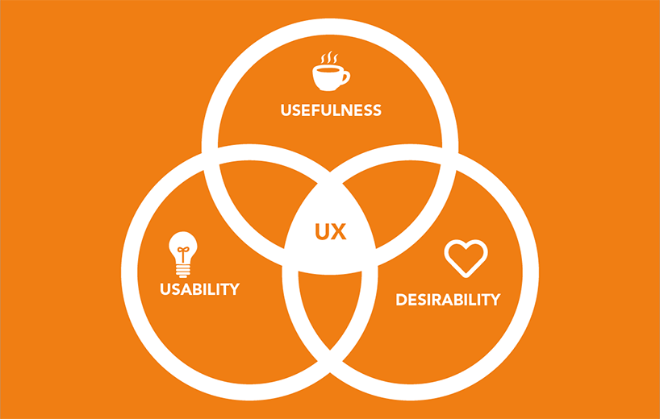

Användarnas behov - "User needs" uttrycker människors mål, värderingar och ambitioner. De är saker personer behöver/vill få ut av en produkt eller tjänst. Vi tar Ockelbo kommuns hemsida som ett exempel. En person går in på hemsidan för att det är något de vill göra eller ta reda på. Det är viktigt för en interaktionsdesigner att ta reda på vad personen vill få ut av hemsidan. Användarens behov hjälper oss att förstå vilka användarna är och varför de vill använda produkten eller tjänsten.
Mätbara krav - Ett mätbart krav är ett krav som går att mäta och avgöras om kraven är uppfyllda. Ett exempel är om en skobutik ska digitalisera deras företag och att deras skor ska synas på hemsidan. Då kan detta vara exempel på mätbara krav.
Kravspecifikation - Handlar om att kunden i detta fall tydligt beskriva idéer, tankar och lnskemål om de uppgifter som hemsidan ska kunna hantera.
- Skorna ska visas med bild
- Bilderna på skorna ska kunna roteras
- Under bilderna på skorna ska pris, storlekar och en "köpknapp" finnas
- Bilderna ska kunna klickas på för att ta kunden vidare till mer information om skorna